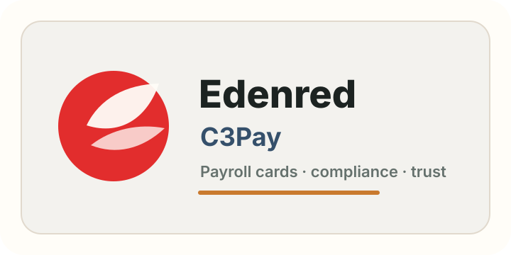

Product Solutions
Self-directed case studies for AI-native product judgment.
Two product discovery explorations built to show how I frame ambiguous customer problems, identify signals, design systems, and translate strategy into a shippable plan.
Case Studies
Built around real business contexts.
Each study starts from a market or user friction, then moves through product thesis, system design, launch plan, and measurable success criteria.

Edenred / C3Pay · PM Compliance
Adaptive Trust
An AI Compliance Service that converts fragmented payroll-card risk signals into faster, more explainable trust decisions for regulated financial operations.
Compliance AI
Risk Ops
Decisioning

Solace · Associate PM
The Navigation Layer
An AI Navigation Copilot that helps teams find the right answer, workflow, or support path when product complexity creates costly hesitation.
AI Copilot
User Guidance
Activation